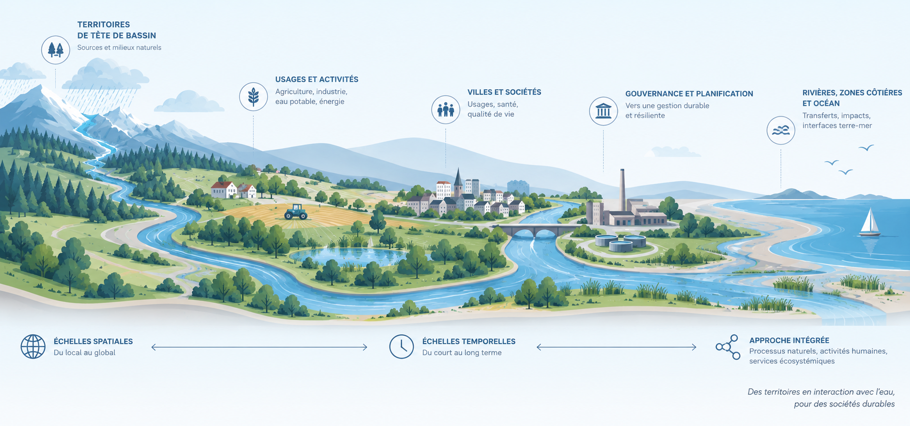

Projects
Our research is structured around collaborative projects that connect process understanding, model development and water-management challenges.
FutureFlow
Scientific coordination: Jean-Raynald de Dreuzy & Clément Roques · University of Neuchâtel
FutureFlow develops a multi-model, multi-fidelity approach to better represent groundwater contributions to headwater-catchment dynamics.
We aim to select the appropriate level of model fidelity for the dominant processes, available data and simulation objectives, then deploy these approaches across a large number of European catchments.
Participants — Arnaud Blouin, Benoît Combemale, Alexandre Boisson, Florence Habets, Oliver Schilling…
Institutions — CNRS / University of Rennes · University of Neuchâtel · BRGM · ENS-PSL · University of Basel / Eawag
Funding — ANR PRCI France–Switzerland

Water Footprint & Sentinel Water
Scientific coordination: Jean-Raynald de Dreuzy & Hélène Budzinski · University of Bordeaux
We investigate how socio-hydrological systems transform, attenuate, delay or reveal pressures on water, linking water uses, transfers, exposure, observed effects and indicators.
Phase 2 brings together four complementary projects — AMONT, HOLI-AQUA, SEREINE and SPeCtre — and a broad scientific and stakeholder community.
Funding — France 2030 · PEPR OneWater – Eau Bien Commun · ANR

Chaire Eaux & Territoires
Co-chairs: Luc Aquilina & Jean-Raynald de Dreuzy · University of Rennes / CNRS
Working with water managers and local authorities, we investigate how water resources respond to climate change and changing demands, connecting surface water, groundwater, water quality and water-supply systems.
Funding — Eau du Bassin Rennais · Rennes Métropole (2019–2028) · SMG Eau 35 (2024–2028)

Other projects
Shallow groundwater resources under Climate Change
Coordination: Nicolas Massei · ANR ICCER · M2C / Géosciences Rennes / RiverLy / SCE / LJAD
Hybrid physics-based/deep-learning modelling of shallow aquifers under climate change, from gauged to ungauged catchments.
NItrate REcovery CApacity Status
Flore Sergeant · Marie Skłodowska-Curie Postdoctoral Fellowship
Assessing and mapping nitrate recovery capacity by linking reactivity, agricultural legacy, transit times and lithology across more than 300 pilot catchments in France and Germany, before extending the approach to other European regions.